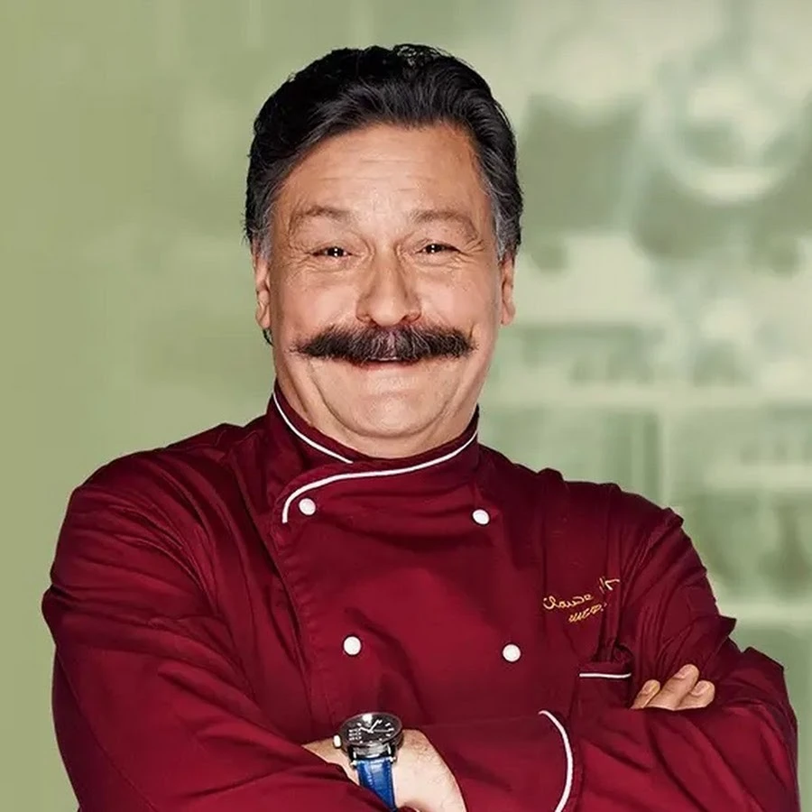
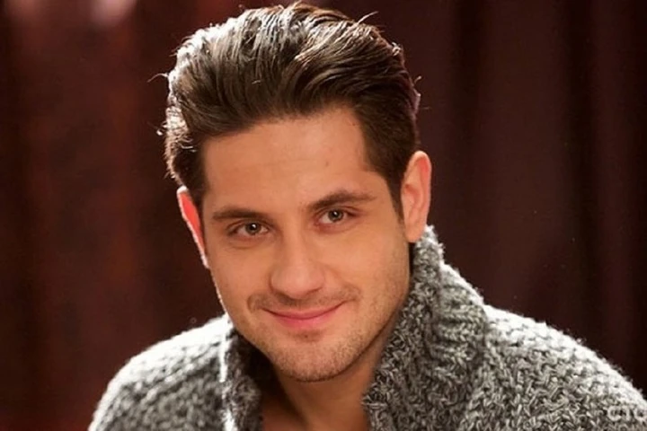
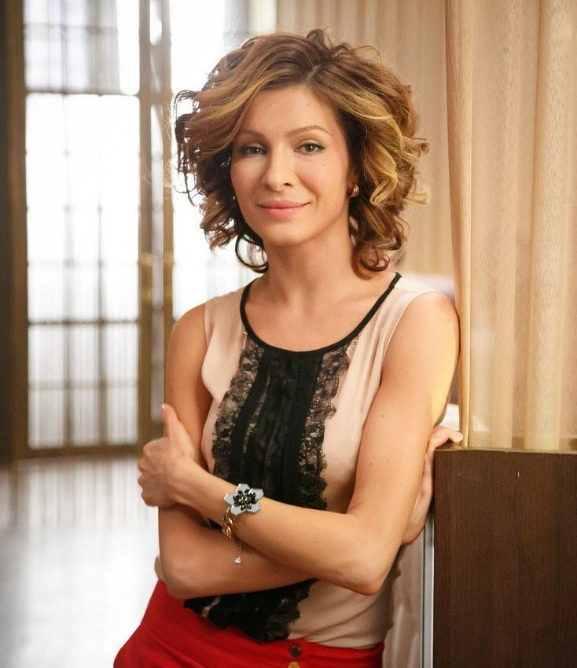
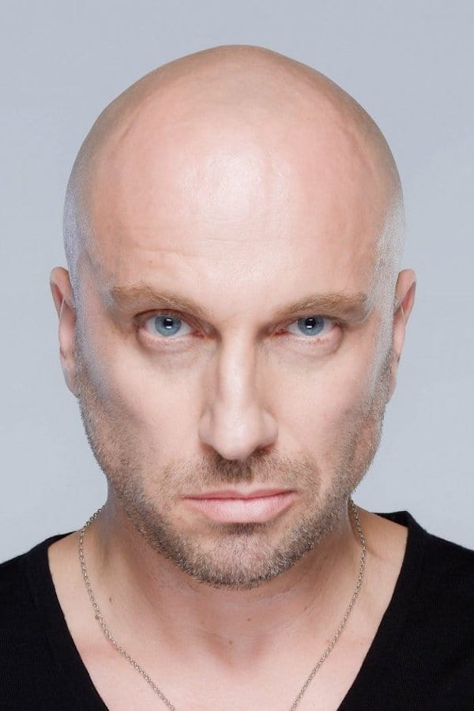
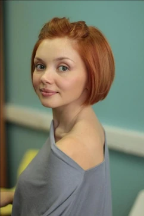
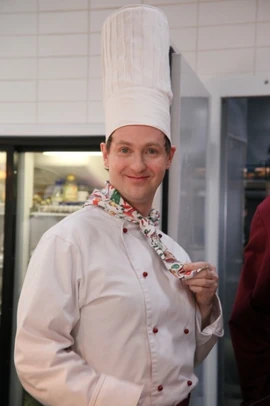
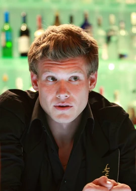
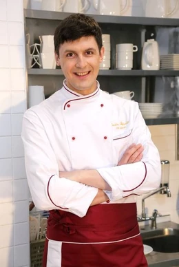
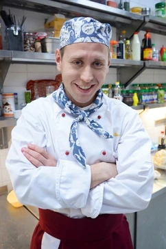
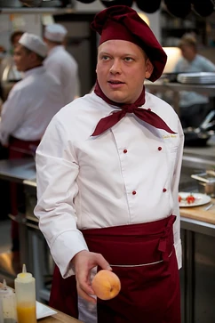

Топ-10 персонажей сериала "Кухня"
1. Виктор Баринов
Шеф-повар, гений кулинарии с тяжелым характером. Виктор Баринов — душа ресторана и главный генератор забавных и драматичных ситуаций.
2. Максим Лавров
Амбициозный молодой повар, который мечтает о карьере, но постоянно попадает в курьезные ситуации. Его путь полон испытаний.
3. Виктория Гончарова
Арт-директор ресторана "Claude Monet". Умная, красивая и целеустремленная женщина, которая знает, чего хочет.
4. Дмитрий Нагиев
Владелец ресторана, который всегда находится в центре внимания. Его сарказм и харизма добавляют сериалу особую остроту.
5. Анастасия Анисимова
Официантка с мягким характером, но с большим сердцем. Ее истории часто вызывают улыбку.
6. Луи Бенуа
Французский Шеф-кондитер, который привносит в сериал изюминку. Его акцент и манеры незабываемы.
7. Константин Анисимов
Бармен ресторана, который всегда знает, как подбодрить гостей. Его дружелюбие делает его одним из любимых героев.
8. Лев Соловьёв
Су-шеф, который всегда помогает Виктору Баринову справляться с кухонными трудностями. Верный помощник и профессионал.
9. Фёдор Юрченко
Oдин из главных героев сериалов «Кухня», «Отель Элеон» и главный герой сериала «СеняФедя». Работает в фудтраке «И рыба, и мясо». До этого
работал поваром-универсалом, су-шефом и шеф-поваром в ресторане Victor и поваром-универсалом
в ресторане Claude Monet. Специалист по рыбе. Лучший друг Сени.
10. Арсений Чуганин
дин из главных героев сериалов «Кухня», «Отель Элеон» и «Гранд» и главный герой сериал឵а «СеняФедя». Работает в фудтраке «И рыба и мясо».
До этого работал поваром-универсалом, шеф-поваром и су-шефом в ресторане Victor и
поваром-универсалом в ресторане Claude Monet. Специалист по мясу. Лучший друг Феди.